CronologiaChronology
Vita e opereLife and work
Anno dopo anno, le opere datate: dal primo bassorilievo del 1960 alle ultime sculture del 2003.Year by year, the dated works: from the first relief in 1960 to the last sculptures of 2003.
La biografia completa è in preparazione con la famiglia. Se conosci date, mostre o luoghi legati a Ubaldo Rizzo, scrivici.A full biography is being prepared with the family. If you know dates, exhibitions or places connected with Ubaldo Rizzo, write to us.
1965
1960–1970
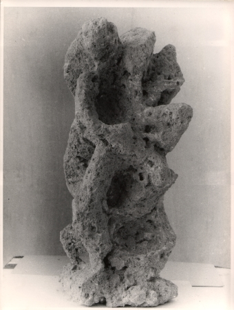
Senza titoloUntitledpietrastone
 Senza titoloUntitled
Senza titoloUntitledpietrastone
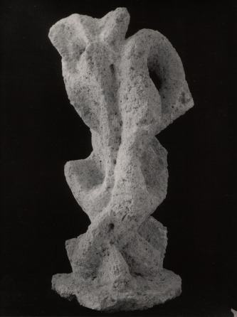
Senza titoloUntitledpietrastone
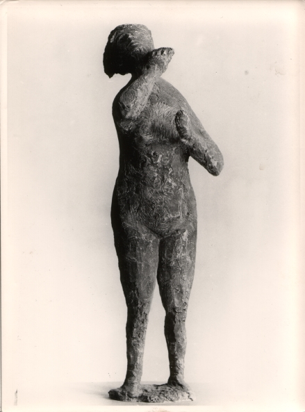
Senza titoloUntitledpietrastone
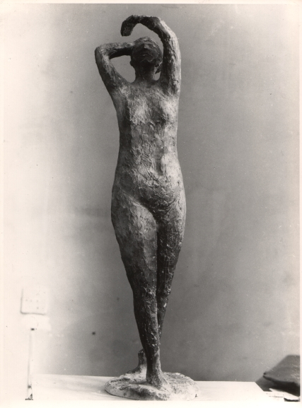
Senza titoloUntitledpietrastone
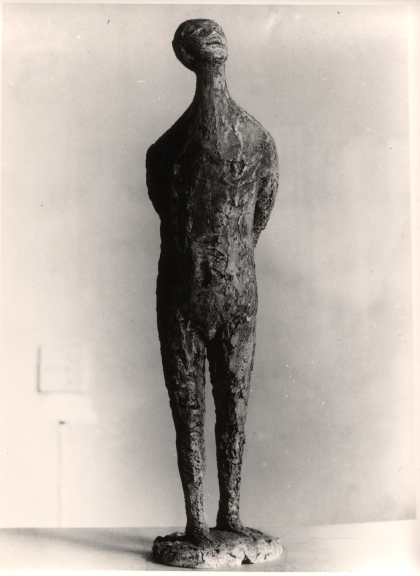
Senza titoloUntitledpietrastone
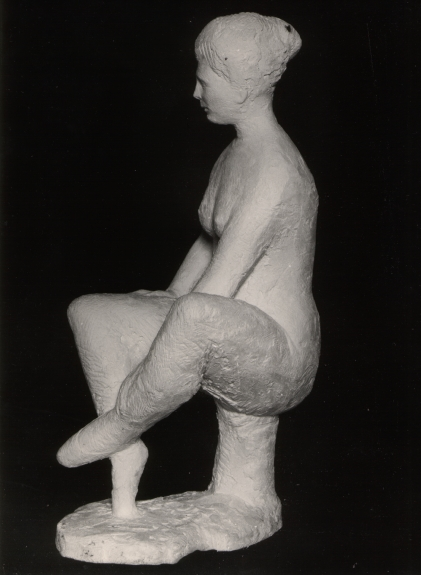
Senza titoloUntitledpietrastone
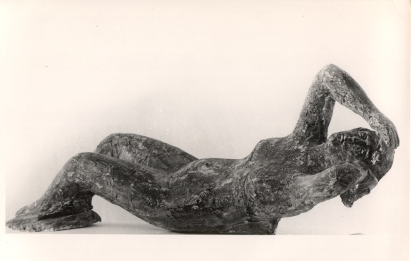
Senza titoloUntitledpietrastone
1966
1967

1968
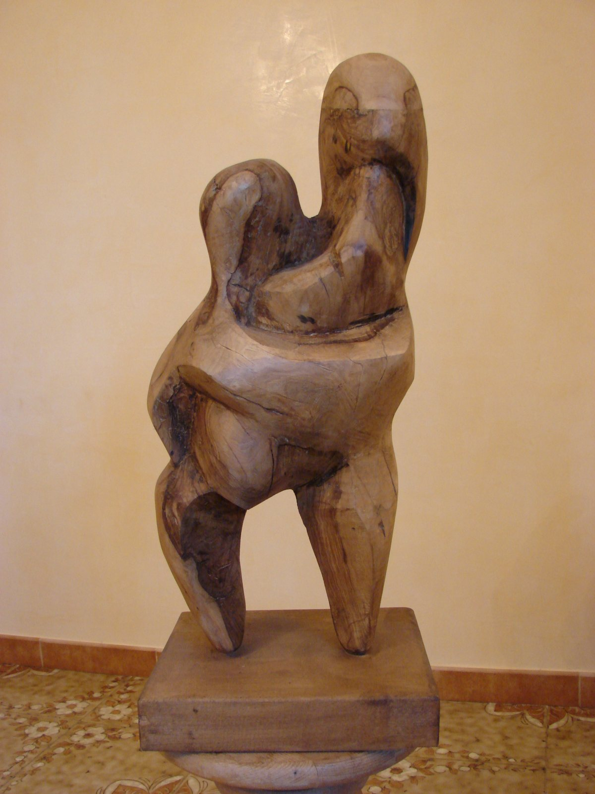
OttentottaOttentottalegno di ulivoolive wood
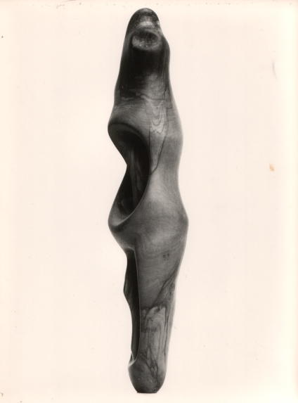
PreghieraPreghieralegno di ulivoolive wood
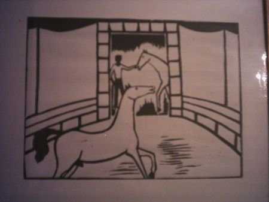
CircoCircolinoleografialinocut
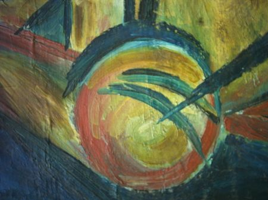
OblioOblioolio su telaoil on canvas
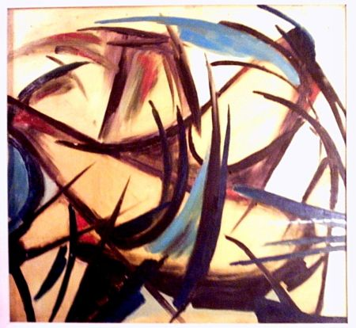
Senza titoloUntitledoliooil
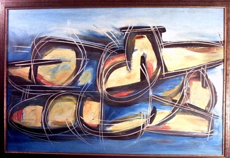
Studio per sculturaStudio per sculturaoliooil
1969
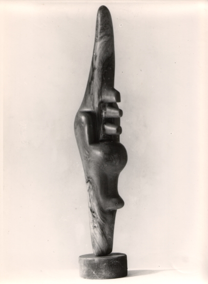
MostruositàMostruositàlegno di ulivoolive wood
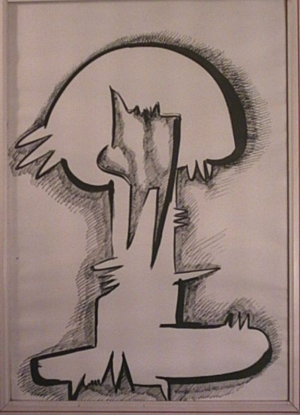
EsplosioneEsplosioneinchiostro di chinaIndian ink
 EsplosioneEsplosione
EsplosioneEsplosionepenna a biroballpoint pen
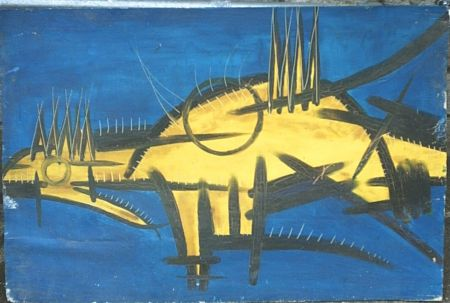
Il mostro di LochnessIl mostro di Lochnessolio su compensatooil on plywood
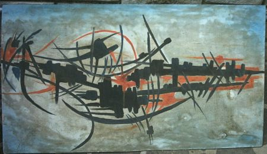
In fondo al mareIn fondo al mareolio su compensatooil on plywood
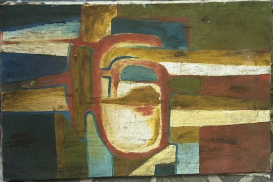
NucleoNucleoolio su telaoil on canvas
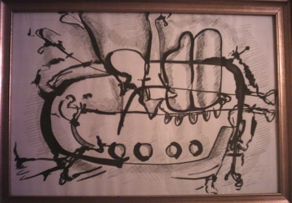
Senza titoloUntitledinchiostro di chinaIndian ink
1970
 AttesaAttesa
AttesaAttesalegno di ulivoolive wood
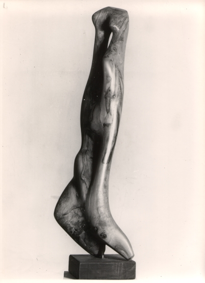
CariatideCariatidelegno di ulivoolive wood
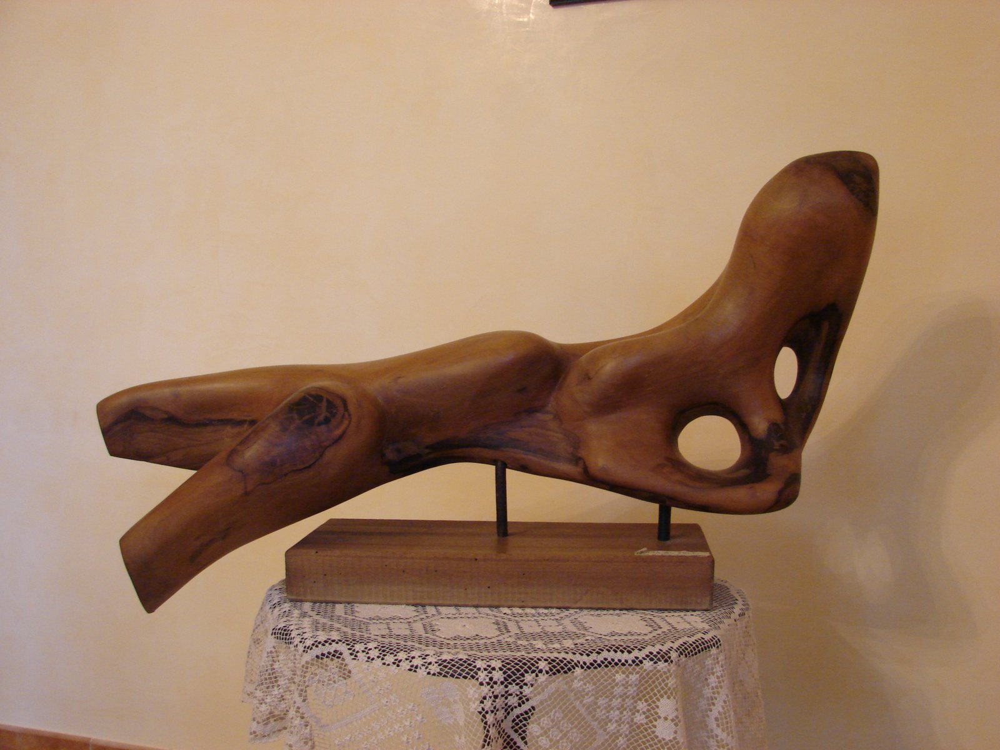
Donna al soleDonna al solelegno di ulivoolive wood
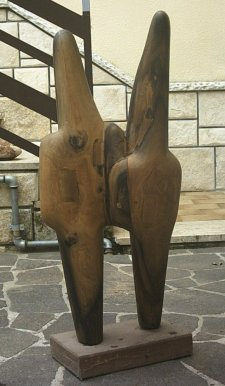
Gruppo di famigliaGruppo di famiglialegno di ulivoolive wood
 EsplosioneEsplosione
EsplosioneEsplosioneinchiostro tipograficoprinting ink
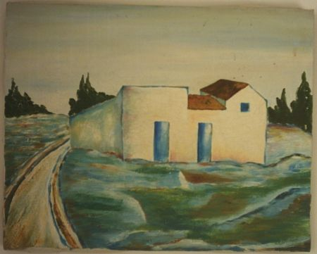
La casa in campagnaLa casa in campagnaolio su telaoil on canvas
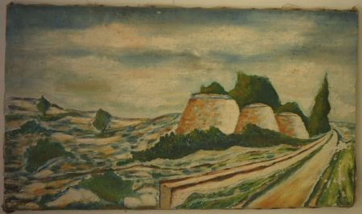
PagghiarePagghiareolio su telaoil on canvas
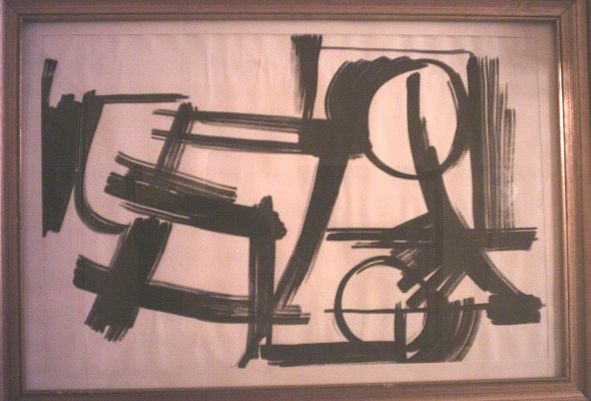
Senza titoloUntitledinchiostro di chinaIndian ink